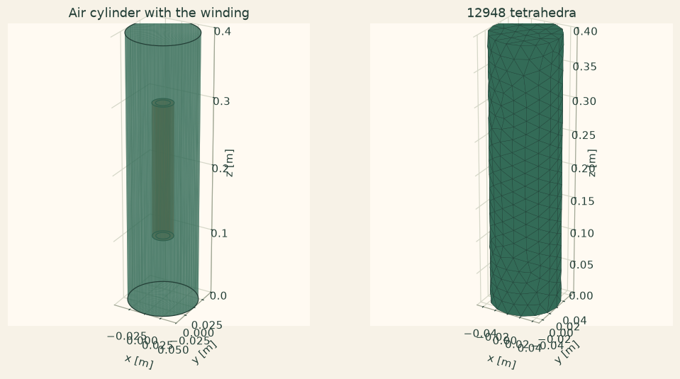

Docs › Examples › Interior field of a long solenoid
Magnetostatics · 3D
Interior field of a long solenoid
The uniform interior field of a long solenoid, graded against mu0 n I.
Run locally with OneSimulation. The example downloads are free. Running them requires an activated runtime. Runtime Alpha 0.2.1a7 · CPython 3.13 on macOS (Apple Silicon), Ubuntu 22.04 (x86-64), and Windows x64. Installation and activation · View pilot plans. Scope of the reference checks.

What it computes
OneSimulation solves the magnetostatic vector-potential problem on a 3D mesh with Nedelec elements and reconstructs the flux density B. The geometry is read from a STEP file with named faces; the script that builds it comes with the notebook.
What it checks
The central interior field matches B = mu0 n I within about 6 %, and is nearly uniform along the axis.
Geometry
The notebook starts at the import of the CAD file long_solenoid_interior_field.step: STEP (AP242), readable by any CAD program, with the names of the faces that the boundary conditions use. Put it next to the notebook.


The geometry script
The script long_solenoid_interior_field_geometry.py builds the geometry with the CAD objects of OneSimulation and writes the file. Change a dimension there, run it, and run the notebook again.
"""Geometry of the OneSimulation example "Interior field of a long solenoid".
Builds the air cylinder around the coil, radius 50 mm and 400 mm long, with the CAD objects of
OneSimulation and writes long_solenoid_interior_field.step. The faces keep their names outer_wall,
bottom and top in the file. The winding is no part of the file: the notebook declares it as a
current source, and the mesher embeds its volume in the air.
"""
from onesim.cad.d3 import Cylinder
air = Cylinder(radius=0.050, length=0.400)
air.save("long_solenoid_interior_field.step")The notebook
The complete notebook, cell by cell. Run it to produce the figures and the comparison printout.
A single homogenised solenoid (mean radius \(\approx 12.5\) mm, length \(200\) mm, so length \(\gg\) radius) carries \(1\,\mathrm{A}\) through \(400\) turns. Its current is modelled as an azimuthal volume current density on one explicitly meshed winding region. OneSimulation solves \(\nabla\times(\mu^{-1}\nabla\times\mathbf A)=\mathbf J\) with a weak Coulomb gauge and reconstructs \(\mathbf B=\nabla\times\mathbf A\).
The air cylinder comes from the CAD file long_solenoid_interior_field.step; the script long_solenoid_interior_field_geometry.py builds it with the CAD objects of OneSimulation. The winding is declared as a current source, and the mesher embeds its volume in the air.
Reference. Deep inside an infinitely long solenoid the field is axial and uniform,
The coil here is long but finite, so the formula is approached from below (the ends let a little flux escape).
import numpy as np
from onesim.cad.d3 import AnnularCylinder
from onesim.cad.exchange import load
from onesim.materials import VacuumPermeability
from onesim.meshing import LocalRefinement, TetrahedralMesher
from onesim.numerics import Numerics
from onesim.numerics.fem import FiniteElement, Nedelec
from onesim.numerics.linear import SparseDirect
from onesim.physics.magnetostatics import (
CoulombGauge,
MagneticInsulation,
MagneticVectorPotential,
Magnetostatics,
SolenoidCurrent,
)
from onesim.simulation import Problem, Simulation
from onesim.visualization import plots, theme
theme.set()Geometry and mesh
The winding sits in the middle of the air cylinder and is meshed more finely than the air.
air = load("long_solenoid_interior_field.step")
centre = air.size[2] / 2
coil_length, turns, current = 0.20, 400, 1.0
coil = SolenoidCurrent(
inner_radius=0.010,
outer_radius=0.015,
length=coil_length,
center=(0.0, 0.0, centre),
turns=turns,
current=current,
support_factory=AnnularCylinder,
)
mesh = TetrahedralMesher(
target_size=0.02,
embedded_regions=(coil.support,),
refinements=(LocalRefinement(region=coil.support, target_size=0.006),),
).generate(air)
fig = plots.figure(1, 2, size=(11, 6))
plots.geometry([air, coil.support], title="Air cylinder with the winding", ax=fig[0])
plots.mesh(
mesh,
groups=("all",),
legend=False,
title=f"{mesh.cell_count} tetrahedra",
ax=fig[1],
)
plots.show()Model
model = Magnetostatics(
domain=air.volume,
permeability=VacuumPermeability(),
formulation=MagneticVectorPotential(gauge=CoulombGauge()),
current_sources=(coil,),
)
problem = Problem(
name="Long solenoid interior field",
geometry=air,
physics=(model,),
boundary_conditions=(
MagneticInsulation(boundary=air.boundaries.all, physics=model),
),
)
numerics = Numerics(
spatial=FiniteElement(element=Nedelec(order=1)), linear_solver=SparseDirect()
)
flux_density = (
Simulation(problem=problem, mesh=mesh, numerics=numerics)
.solve_stationary()
.field(model.magnetic_flux_density)
)Centre field and axial uniformity
The axial field is sampled along the axis over the central half of the coil, where an infinite solenoid would be perfectly uniform.
ideal = VacuumPermeability().evaluate() * turns / coil_length * current
z = np.linspace(centre - coil_length / 4, centre + coil_length / 4, 21)
axial = flux_density.evaluate(np.column_stack((np.zeros_like(z), np.zeros_like(z), z)))[
:, 2
]
print(
f"centre axial field: simulation {1e3 * axial[10]:.4f} mT, ideal mu0 n I {1e3 * ideal:.4f} mT, "
f"deviation {100 * (axial[10] / ideal - 1):+.2f} % (finite length lowers the field)"
)
print(
f"axial non-uniformity over the central half: {100 * (axial.max() - axial.min()) / axial.mean():.2f} %"
)Figure
plots.line(
1e3 * (z - centre),
{"simulation": 1e3 * axial},
hlines={"ideal mu_0 n I": 1e3 * ideal},
markers=True,
xlabel="axial position from centre z [mm]",
ylabel="axial flux density B_z [mT]",
title="Long solenoid: interior axial field",
)
plots.show()Going further
Lengthen the coil and watch the centre field climb towards \(\mu_0 n I\) as the end effects fade. Enlarge the air cylinder in long_solenoid_interior_field_geometry.py and write the STEP file again: the magnetic insulation then sits farther from the winding, with the same effect.